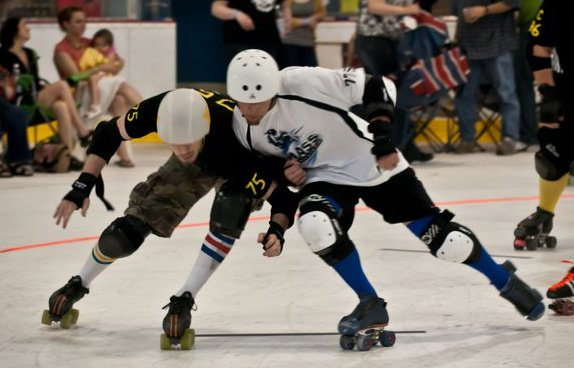

About
I develop machine learning algorithms for tough problems—tending toward natural language processing applications. When I'm not in front of a whiteboard or computer, I'm probably climbing things, walking around on my hands, eating delicious vegan food, or hanging out with Hanna Wallach.
I'm working on my PhD with Jason Eisner. We're using reinforcement learning to speedup inference algorithms and developing the Dyna programming language. I also collaborate with Ryan Cotterell.
I've also worked with Andrew McCallum on Rexa and FACTORIE; Dan Roth on Textual Entailment.
Roller Derby


Publications
-
Tim Vieira, Matthew Francis-Landau, Nathaniel Wesley Filardo, Farzad Khorasani, and Jason Eisner.
Dyna: Toward a Self-Optimizing Declarative Language for Machine Learning Applications.
Workshop on Machine Learning and Programming Languages. 2017.
slides video -
Tim Vieira and Jason Eisner.
Learning to Prune: Exploring the Frontier of Fast and Accurate Parsing. [PREPRINT]
TACL 2017. (oral presentation at ACL 2017)
code slides -
Tim Vieira*, Ryan Cotterell*, and Jason Eisner.
Speed-Accuracy Tradeoffs in Tagging with Variable-Order CRFs and Structured Sparsity.
EMNLP 2016. (* equal contribution)
code -
Aaron Steven White, Drew Reisinger, Keisuke Sakaguchi, Tim Vieira,
Sheng Zhang, Rachel Rudinger, Kyle Rawlins, and Benjamin Van Durme.
Universal Decompositional Semantics on Universal Dependencies.
EMNLP 2016.
website code -
Ryan Cotterell, Tim Vieira, and Hinrich Schütze.
A Joint Model of Orthography and Morphological Segmentation.
NAACL 2016. (best short runner up)
data -
Subhro Roy, Tim Vieira, and Dan Roth.
Reasoning about Quantities in Natural Language.
TACL 2015.
code -
Jason Naradowsky, Tim Vieira, and David A. Smith.
Grammarless Parsing for Joint Inference.
COLING 2012. -
M. Sammons, V. Vydiswaran, T. Vieira, N. Johri, M. Chang, D. Goldwasser,
V. Srikumar, G. Kundu, Y. Tu, K. Small, J. Rule, Q. Do, and D. Roth.
Relation Alignment for Textual Entailment Recognition.
Text Analysis Conference 2009.